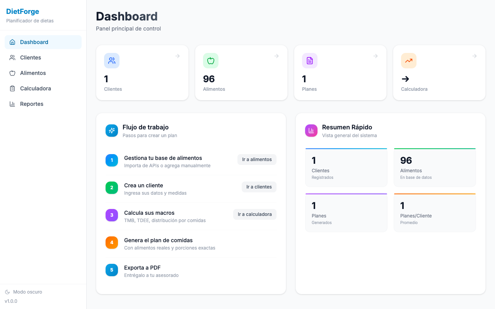
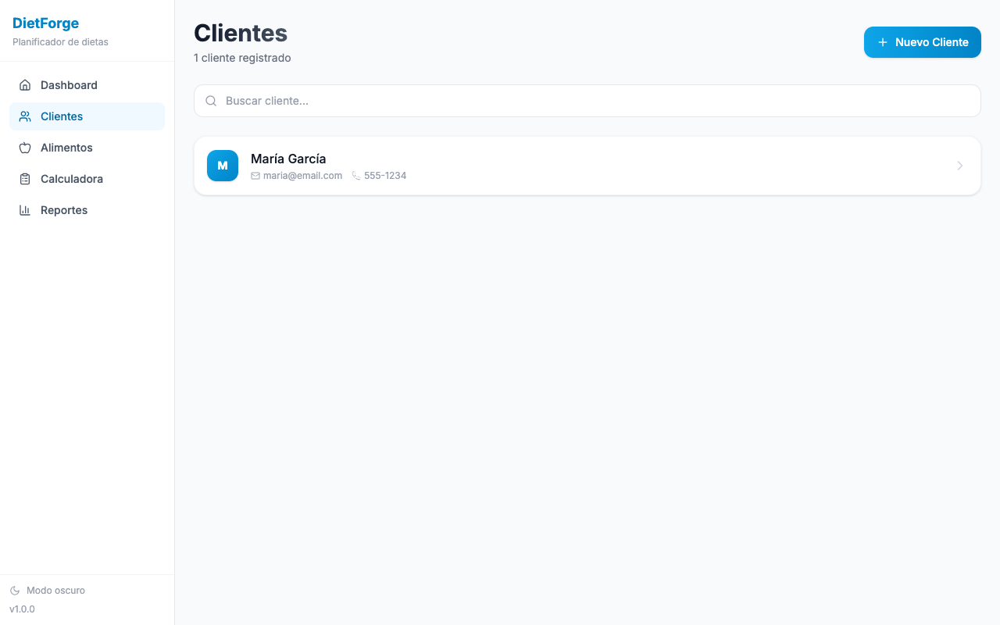
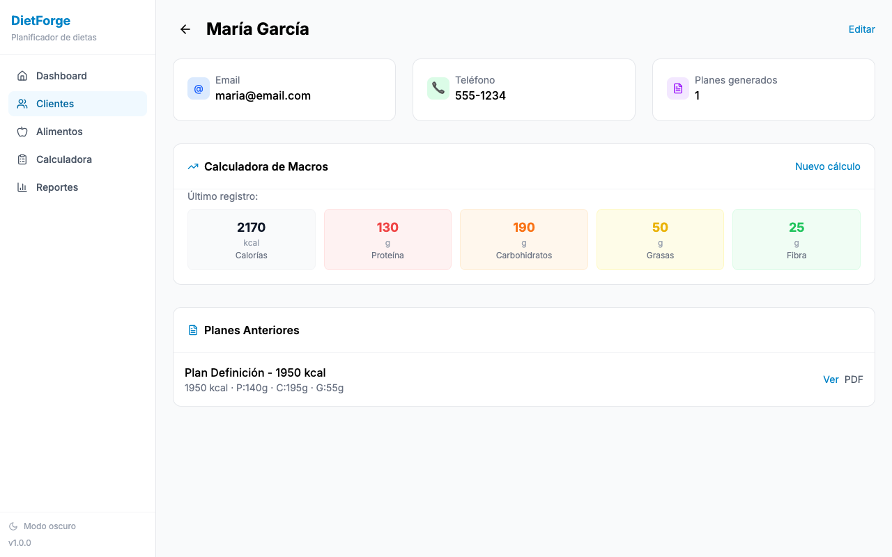
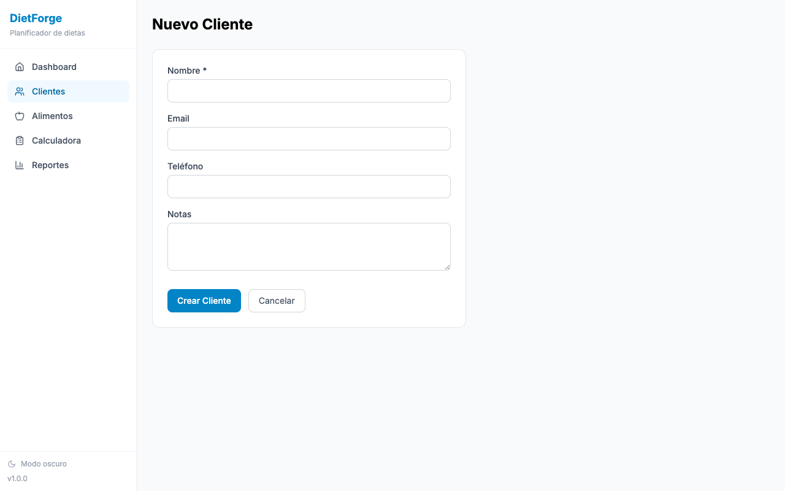
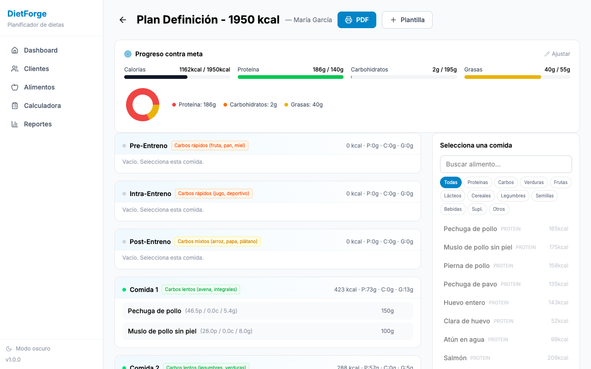
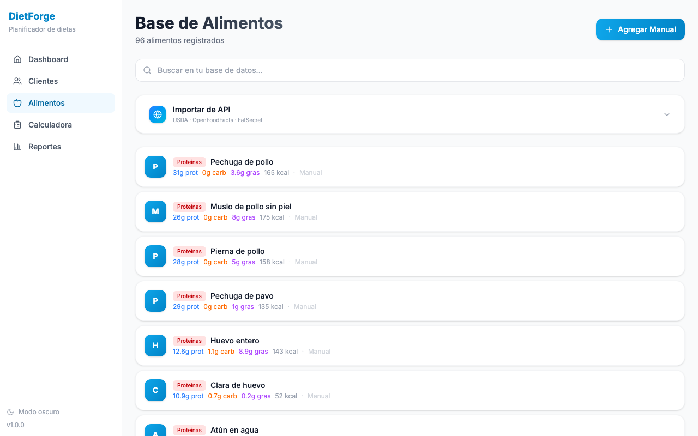
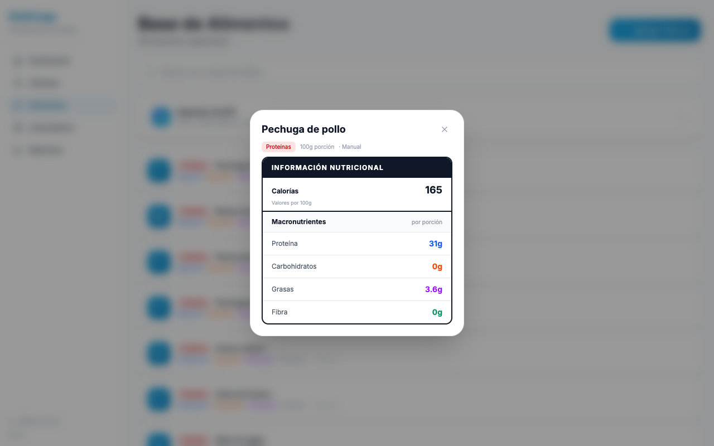
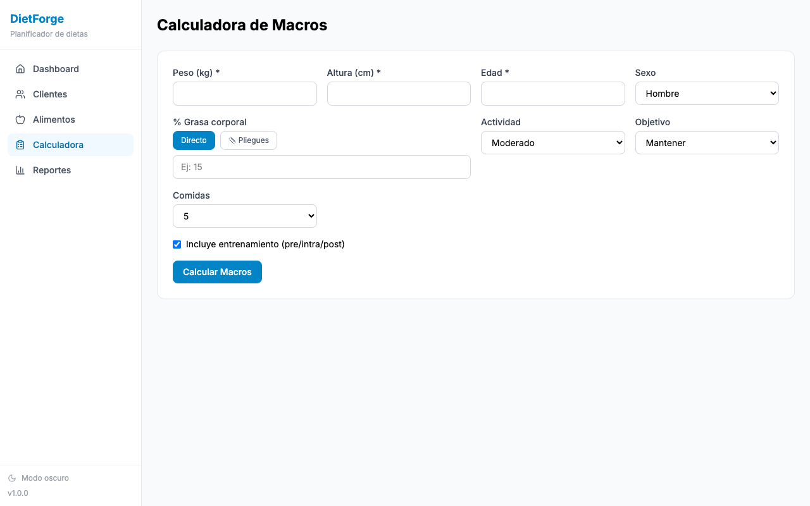
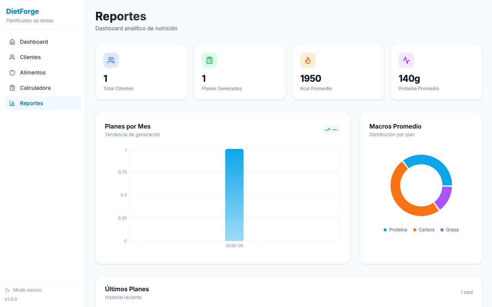

Planificador de Dietas Profesional
Gestión de clientes · Planes alimenticios · Base de datos de alimentos · Cálculo de macronutrientes
Resumen general del sistema con estadísticas clave

Registro, edición y seguimiento de clientes
Vista general con búsqueda, eliminación y acceso a detalle de cada cliente.

Mediciones corporales, historial de planes, generación de PDF y plantillas.

Captura de datos antropométricos y cálculo automático de macronutrientes
Nombre, email, teléfono y notas personales.
Peso, altura, edad, sexo, % grasa corporal, pliegues cutáneos.
5 niveles de actividad — Objetivo: pérdida de grasa, mantenimiento, ganancia muscular o aumento de peso.
Cálculo de TMB, TDEE, proteína, carbohidratos, grasas y fibra según objetivo.

Crea planes alimenticios con distribución por comidas y alimentos

Catálogo de alimentos con búsqueda e importación desde APIs
Más de 80 alimentos mexicanos precargados. Agrega, edita y elimina alimentos manualmente.
Busca alimentos desde:

Click en un alimento → tarjeta nutricional:

Generación automática de dieta profesional en formato listo para imprimir/PDF
Desde el detalle del cliente o el planificador, haz click en "Exportar PDF" → se abre el cuadro de impresión → selecciona "Guardar como PDF".
Cálculo rápido de macronutrientes sin necesidad de registrar cliente
Mifflin-St Jeor para TMB + multiplicador de actividad para TDEE
Distribución automática de macros según objetivo seleccionado

Visualización de datos y estadísticas por cliente

Sistema completo de planificación de dietas
Características:
Gestión de clientes · Cálculo automático de macros · Planificador de comidas
Base de datos de alimentos con 80+ alimentos mexicanos · Importación desde APIs
Exportación a PDF · Reportes con gráficas · Dark mode · Multiplataforma